双创评分雷达图
五个模块各占 20 分。总分看机会强弱，雷达图看结构短板；当某一层明显塌陷时，仓位应该比结论更谨慎。
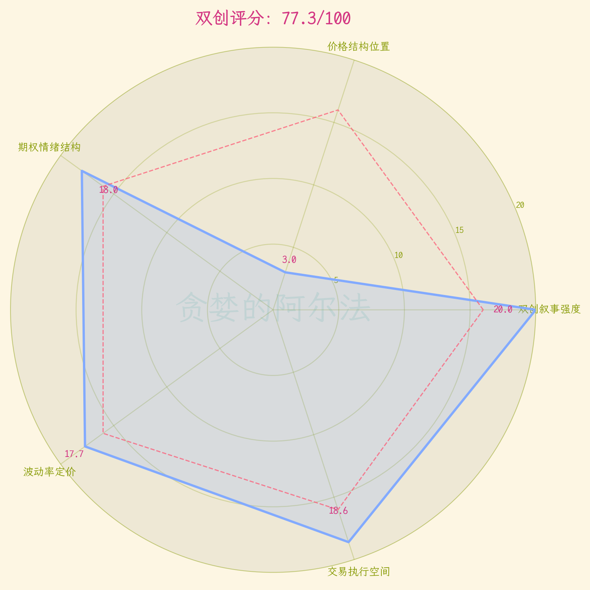
牛市评分回答的是大级别机会是否仍值得跟踪，双创评分回答的是：中国 AI 叙事是否仍适合通过创业板、科创50以及对应 ETF 期权来表达。
这里把文章中的五层逻辑压缩成一套量化仪表盘：先看叙事，再看价格结构，再看期权情绪、波动率定价，最后才回到交易执行空间。
这个分数不是买入指令，而是把双创叙事、价格结构和期权定价放在同一张表里观察。
| 模块 | 权重 | 得分 | 核心证据 |
|---|---|---|---|
| 等待评分数据 | |||
五个模块各占 20 分。总分看机会强弱，雷达图看结构短板；当某一层明显塌陷时，仓位应该比结论更谨慎。

思考逻辑：如果中国也有 AI 叙事，它不应该只停留在个股故事里，至少要能在创业板和科创50这样的指数层面留下痕迹。
重点关注：重点看 2023 年以来六大宽基的相对走势，以及 DeepSeek R1 之后双创是否明显跑赢其它宽基。
评分公式：DeepSeek R1 至七月高点的双创平均涨幅、六大宽基均值、2023以来双创相对收益共同评分。双创越能持续跑出指数级别的超额，这一层分数越高。
用同一起点观察六大宽基的相对强弱。
重点看双创是否只是一段短线脉冲，还是已经在 AI 叙事阶段形成了指数级别的领先。
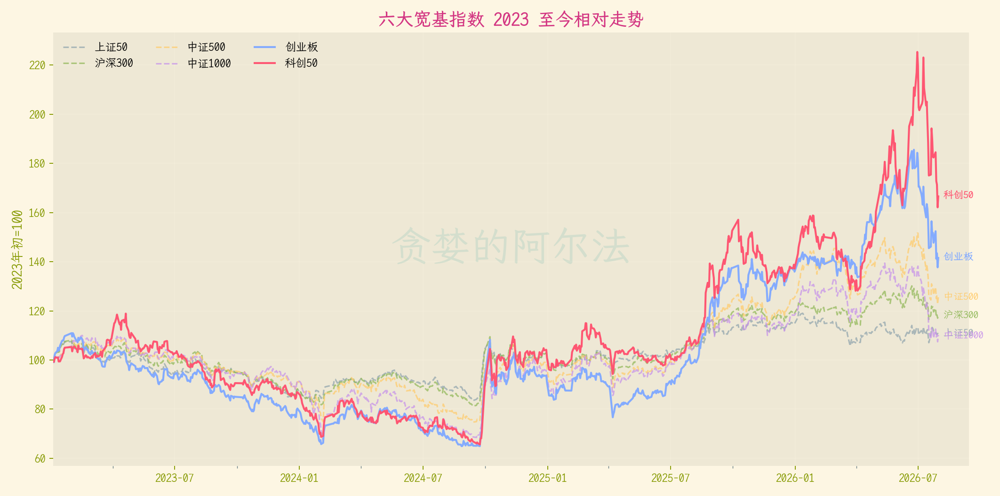
把行情拆成 DeepSeek R1 后的主升段、七月高点后的回撤段，以及 2023 至今的完整结果。
重点看双创是否先抢跑，又是否因为抢跑而承受更剧烈的回撤。
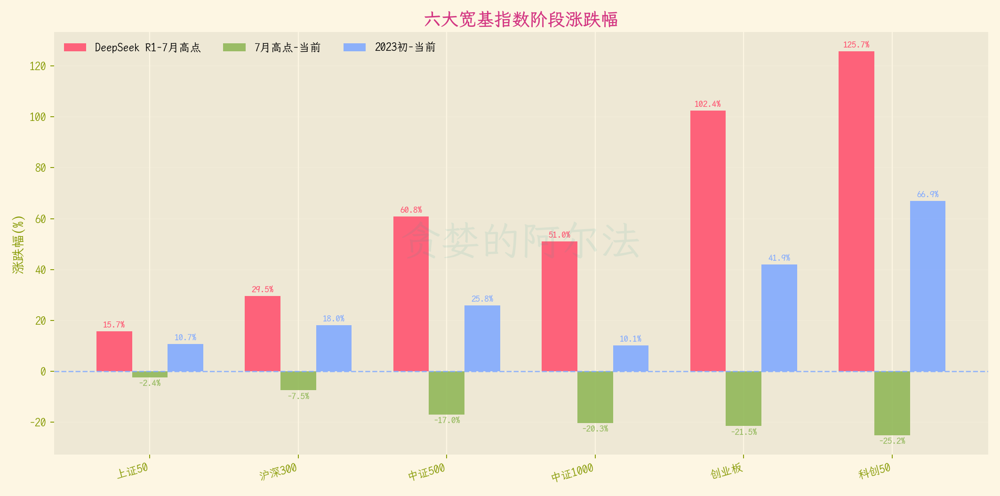
思考逻辑：长期叙事成立，不代表短期价格结构健康。越是弹性资产，越要把支撑、回撤和反弹目标拆开看。
重点关注：重点看 MA144 与 TDF 回撤阶梯。首次回踩、二次跌破、反弹不过前高，对仓位含义完全不同。
评分公式：根据当前收盘价相对主波段斐波那契回撤位置评分。23.6% 内得高分，跌破 78.6% 后明显扣分；两个指数取平均。
价格结构用来回答“现在是在健康回踩，还是已经开始破坏主波段”。
重点看当前价格所在回撤档位，以及反弹时能否重新站回上方阶梯。
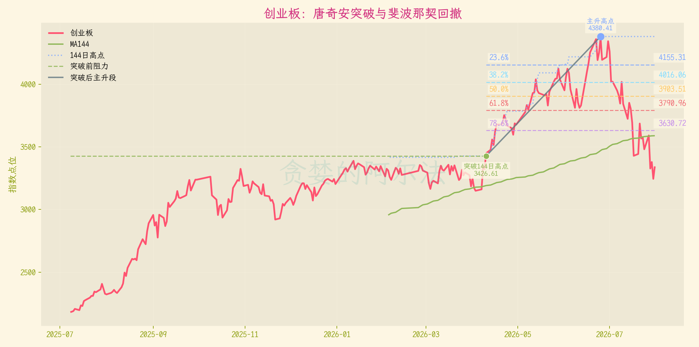
科创50弹性更大，所以支撑失效时对期权持仓的杀伤也更明显。
重点看它是重新夺回前一档支撑，还是继续向波段起点回撤。
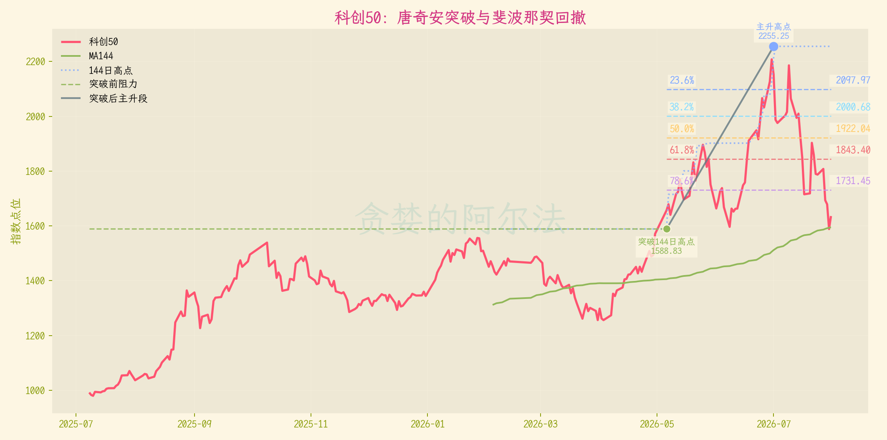
思考逻辑：PCR 不只是看多看空，它更像期权市场有没有提前买保险。价格上涨时保护需求抬升，往往说明资金并没有完全失去警惕。
重点关注：重点看持仓量 PCR 与指数走势是否背离。PCR 过低说明保护不足，过高说明防御拥挤，适度保护反而更健康。
评分公式：成交量 PCR 与持仓量 PCR 共同评分。0.8 至 1.6 附近视为较均衡；极端偏低或偏高均扣分。
主图看指数，副图看持仓量 PCR。
重点看上涨过程中是否提前买保护，以及回撤后保护需求是否继续极端化。
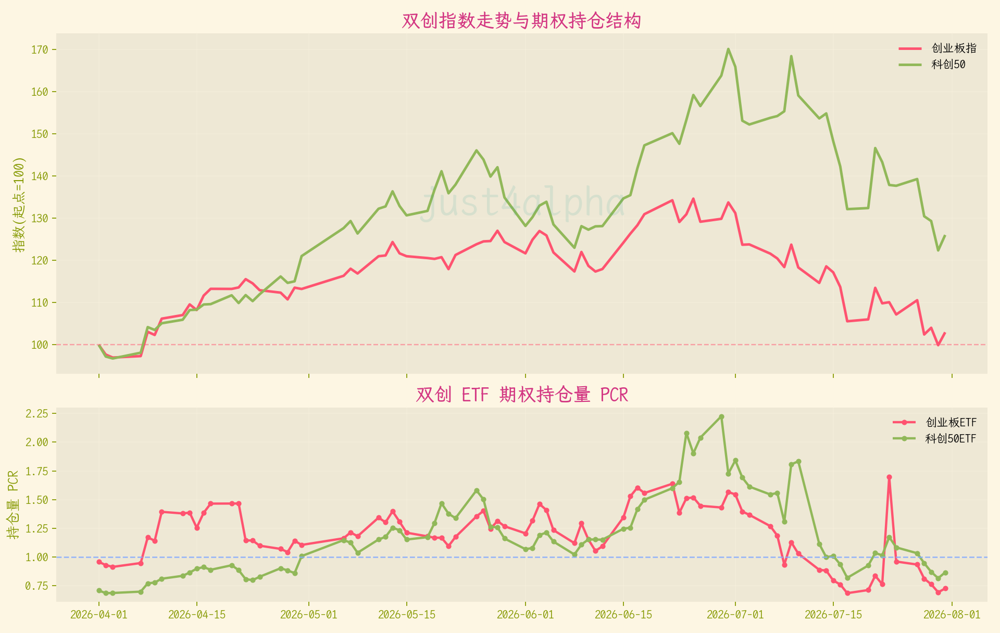
思考逻辑：期权买方最容易犯的错，是只看方向，不看波动率。方向看对，如果隐波买得太贵，也可能输给波动率回落和时间价值。
重点关注：重点看 QVIX、近远月 IV、波动率微笑和曲面。短端越红、虚值越贵，越不能把便宜权利金误认为低风险。
评分公式：QVIX/HV20、近远月 ATM IV、短端是否极端倒挂共同评分。隐波相对真实波动不离谱，且期限结构不过度挤压时加分。
QVIX 越高，代表市场给未来波动的定价越贵。
重点看隐波是否跟随行情同步抬升，以及暴跌后是继续恐慌，还是开始回落。
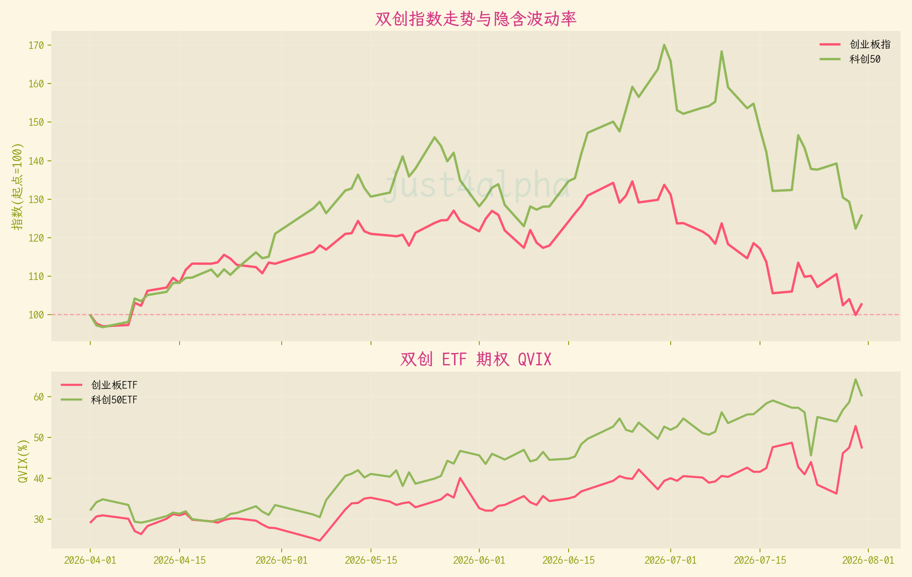
近月和次近月 IV 的变化，可以观察短端定价是否过热。
重点看近月 IV 是否远高于次近月；越接近到期，短期大波动越容易被放大定价。
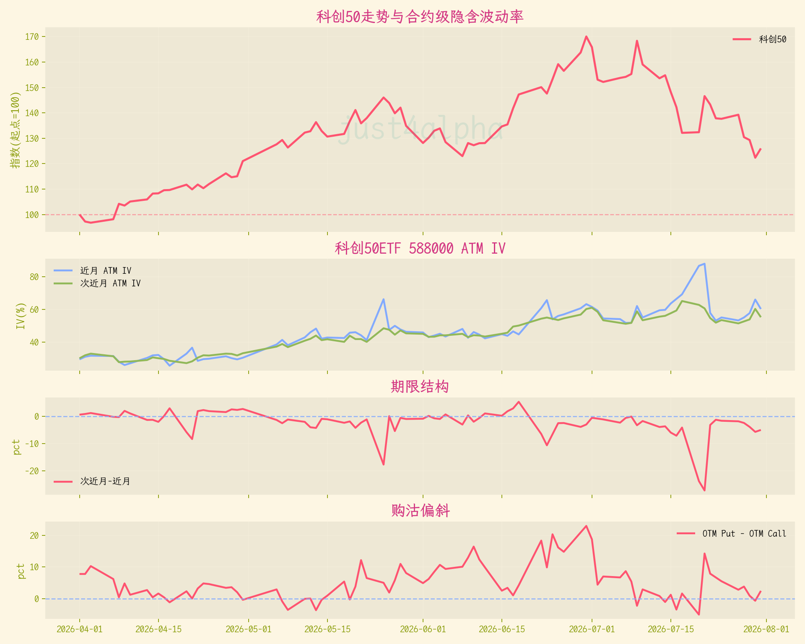
横向比较同一到期月份的不同行权价。
重点看远虚值合约是否已经因为极端预期被抬高 IV。
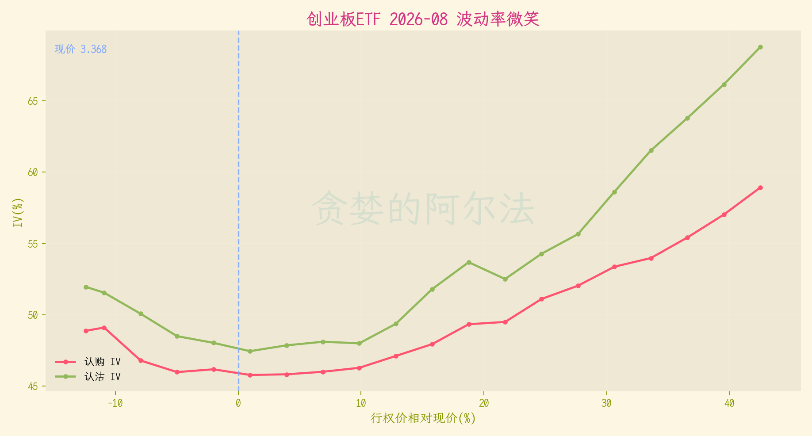
科创50弹性更大，微笑形态通常也更陡。
重点看认购、认沽两端是否同时变贵，这往往意味着市场正在为极端波动付费。
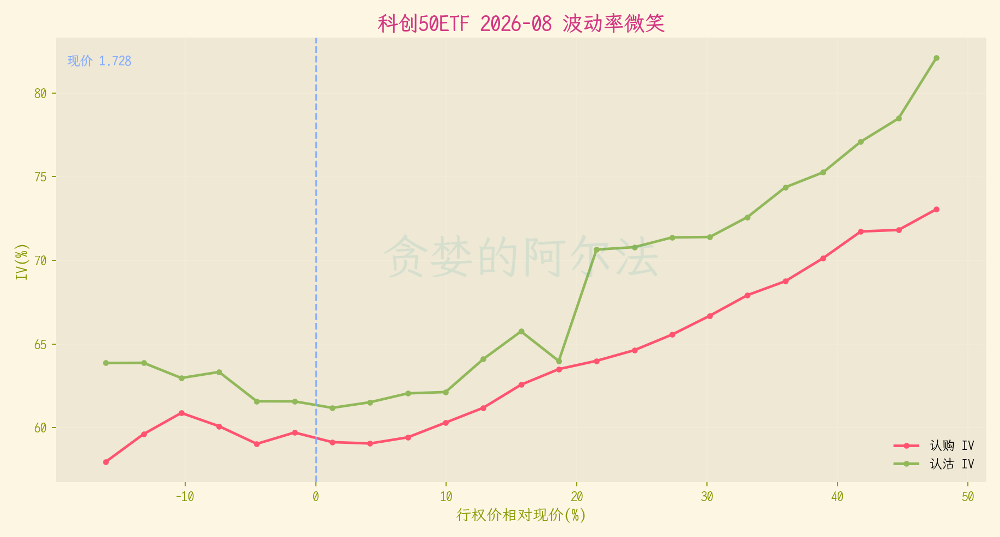
曲面把到期时间和行权价一起放进观察框架。
重点看短端、偏虚值区域是否明显更红，它代表“立刻继续大涨”的预期是否已经很贵。
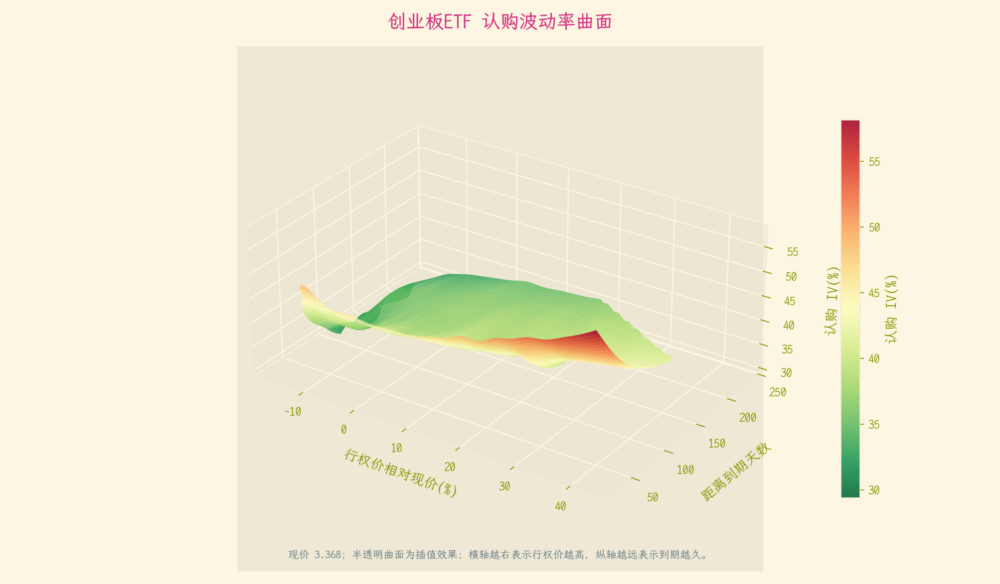
科创50曲面整体更高，说明它的波动率定价更贵。
重点看远月是否仍有足够表达空间，避免短期期权同时赌方向、时间和隐波。
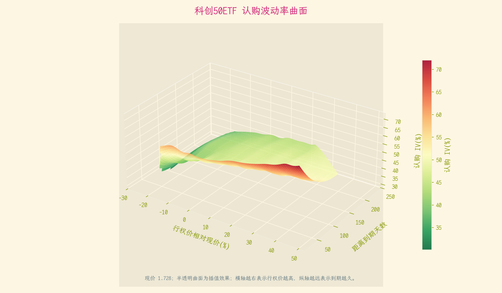
思考逻辑：最后才讨论怎么买。因为期权不是彩票，它是把方向、时间、波动率和仓位管理绑在一起的结构化工具。
重点关注：重点比较短月、远月、平值、实值和价差。长期看好时，短期深虚值认购未必最高效；回撤很深时，也不能只因为便宜就急着加仓。
评分公式：近远月 ATM IV 差异、隐波相对 HV 是否合理、价格结构是否仍有支撑共同评分。远月表达空间越清楚、短端越不过热，这一层分数越高。
这里列出当前用于比较执行空间的 ATM 认购合约。
重点看同一标的近月和远月的 IV、流动性和持仓差异；长期看好时，远月合约通常比近月深虚值更适合表达方向。
| 标的 | 现价 | 期限 | 到期日 | 合约 | 行权价 | 中间价 | IV | 成交量 | 持仓量 |
|---|---|---|---|---|---|---|---|---|---|
| 等待合约数据 | |||||||||
第一，只在牛市评分和双创评分同时支持时，提高双创期权的观察优先级。
第二，价格结构没有修复前，总分再高也不能忽视仓位；雷达图里最短的那根轴，往往就是最容易出问题的地方。
第三，隐波高、回撤深、波动大的时候，不追近月深虚值认购，优先比较更长到期、平值/实值认购、牛市价差和分批建仓。
第四，单日评分不重要，连续变化才重要。真正有价值的是每天观察它是继续修复，还是继续推翻原来的叙事。